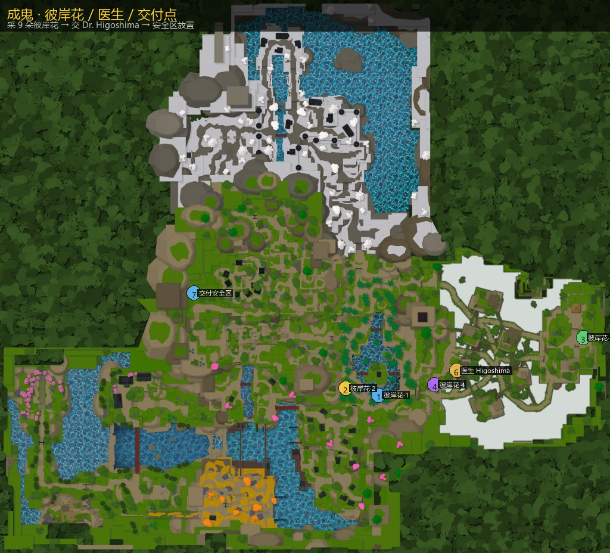

邪恶艺术 · 魔球
仅鬼 / 混血可使用。魔球从各类宝箱低概率掉落；捏碎后接核心训练，完成后获得对应 Demon Art。
主页 / 邪恶艺术
仅鬼 / 混血可使用。魔球从各类宝箱低概率掉落；捏碎后接核心训练，完成后获得对应 Demon Art。
Muzan Quest：采集 彼岸花 ×9，交给 Dr. Higoshima，再在安全区放置。
医生坐标约 1451.5, 1248, -220；交付安全区约 -1159.6, 1195.1, -1008.9（半径 10）。
九种魔球均主要来自宝箱（Common / Rare / Ice / Sealed / World Events / Lost / Snow 等，概率约 0.67%～2%）。档案条目可点名称跳转。
魔球：Shockwave Orb · 捏碎后开启核心训练（键 I will train my Shockwave core）
训练链：俯卧撑→深蹲架→推石→劈石→灭水之十×5。器械跳转 锻炼。
| 键 | 名称 | 体力 | CD | 备注 |
|---|---|---|---|---|
F | Blocking | — | 1 | — |
Z | Demon Core | 20 | 15 | 额外伤害倍率 +0.63 |
X | Compass Needle | 18 | 13 | 反击×2 |
C | Explosive Fury | 24 | 16 | 额外伤害倍率 +0.67 |
V | Flashing Willow | 24 | 17 | — |
B | Annihilation Type | 35 | 50 | Boss 大招关联 Akazo |
魔球：Cryokinesis Orb · 捏碎后开启核心训练（键 I will train my Cryokinesis core）
训练链：冥想→劈石→水下岩石→灭水之十×5。器械跳转 锻炼。
| 键 | 名称 | 体力 | CD | 备注 |
|---|---|---|---|---|
F | Blocking | — | 1 | — |
Z | Wintry Icicles | 22 | 15 | 额外伤害倍率 +0.3 |
X | Cold White Princesses | 22 | 28 | 反击×2 |
C | Barren Hanging Garden | 22 | 16 | 硬直 |
V | Freezing Cloud | 24 | 16 | — |
B | Bodhisattva | 35 | 50 | — |
魔球：Pyrokenesis Orb · 捏碎后开启核心训练（键 I will train my Pyrokenesis core）
训练链：俯卧撑→推石→瞄准→灭水之十×5。器械跳转 锻炼。
| 键 | 名称 | 体力 | CD | 备注 |
|---|---|---|---|---|
F | Blocking | — | 1 | — |
Z | Blood Tiles | 20 | 14 | — |
X | Blood Strike | 18 | 13 | 硬直 |
C | Fiery Slash | 24 | 16 | 额外伤害倍率 +0.62 · 硬直 |
V | Heel Bash | 24 | 17 | 硬直 |
B | Blood Rupture | 35 | 50 | — |
魔球：Blood Manipulation Orb · 捏碎后开启核心训练（键 I will train my Blood Manipulation core）
训练链：杯戏→俯卧撑→瞄准→灭水之十×5。器械跳转 锻炼。
| 键 | 名称 | 体力 | CD | 备注 |
|---|---|---|---|---|
F | Blocking | — | 1 | — |
Z | Bend | 18 | 13 | 额外伤害倍率 +0.26 |
X | Rampant Arc Rampage | 22 | 16 | 额外伤害倍率 +0.34 |
C | On Slaught | 24 | 16 | 额外伤害倍率 +0.4 · 硬直 |
V | Rotating Blood Scythe | 24 | 16 | 额外伤害倍率 +0.5 · 硬直 |
B | Circular Slashes | 35 | 50 | 额外伤害倍率 +0.65 |
魔球：Obi Manipulation Orb · 捏碎后开启核心训练（键 I will train my Obi Manipulation core）
训练链：深蹲→推石→劈石→灭水之十×5。器械跳转 锻炼。
| 键 | 名称 | 体力 | CD | 备注 |
|---|---|---|---|---|
F | Blocking | — | 1 | — |
Z | Obi Barrage | 20 | 14 | 额外伤害倍率 +0.56 · 硬直 |
X | Obi Pursuit | 18 | 12 | 硬直 |
C | Obi Grab | 22 | 14 | — |
V | Obi Field | 24 | 16 | — |
B | Obi Charge | 35 | 50 | 硬直 |
魔球：Reaper Orb · 捏碎后开启核心训练（键 I will train my Reaper core）
训练链：杯戏→瞄准→劈石→灭水之十×5。器械跳转 锻炼。
| 键 | 名称 | 体力 | CD | 备注 |
|---|---|---|---|---|
F | Blocking | — | 1 | — |
Z | Reap Of Despair | 18 | 13 | — |
X | Reaptide | 28 | 19 | — |
C | Sonido | 14 | 10 | 额外伤害倍率 +0.25 |
V | Phantom Step | 26 | 18 | — |
B | Sonido Surge | 35 | 50 | 硬直 |
魔球：Arrow Orb · 捏碎后开启核心训练（键 I will train my Arrow core）
训练链：冥想→瞄准→推石→灭水之十×5。器械跳转 锻炼。
| 键 | 名称 | 体力 | CD | 备注 |
|---|---|---|---|---|
F | Blocking | — | 1 | — |
Z | Arrow Flight | 14 | 10 | — |
X | Arrow Eruption | 24 | 17 | — |
C | Arrow Smackdown | 18 | 12 | — |
V | Torrential Arrows | 24 | 16 | — |
B | Koketsu Arrow | 35 | 50 | 额外伤害倍率 +0.45 |
魔球：Dream Orb · 捏碎后开启核心训练（键 I will train my Dream core）
训练链：冥想→杯戏→瞄准→灭水之十×5。器械跳转 锻炼。
| 键 | 名称 | 体力 | CD | 备注 |
|---|---|---|---|---|
F | Blocking | — | 1 | — |
Z | Melodic Whisper | 18 | 13 | — |
X | Ordained Flesh | 24 | 16 | 额外伤害倍率 +0.5 |
C | Piercing Flesh | 22 | 14 | — |
V | Flesh Barrage | 24 | 16 | 额外伤害倍率 +0.35 |
B | Flesh Monster | 35 | 50 | 额外伤害倍率 +0.22 |
魔球：Tamari Orb · 捏碎后开启核心训练（键 I will train my Tamari core）
训练链：杯戏→俯卧撑→劈石→灭水之十×5。器械跳转 锻炼。
| 键 | 名称 | 体力 | CD | 备注 |
|---|---|---|---|---|
F | Blocking | — | 1 | — |
Z | Spinning Throw | 18 | 13 | — |
X | Dunk | 20 | 14 | — |
C | Piercing Kick | 22 | 15 | — |
V | Meteor | 26 | 18 | 额外伤害倍率 +0.88 |
B | Spiraling Shot | 35 | 50 | — |